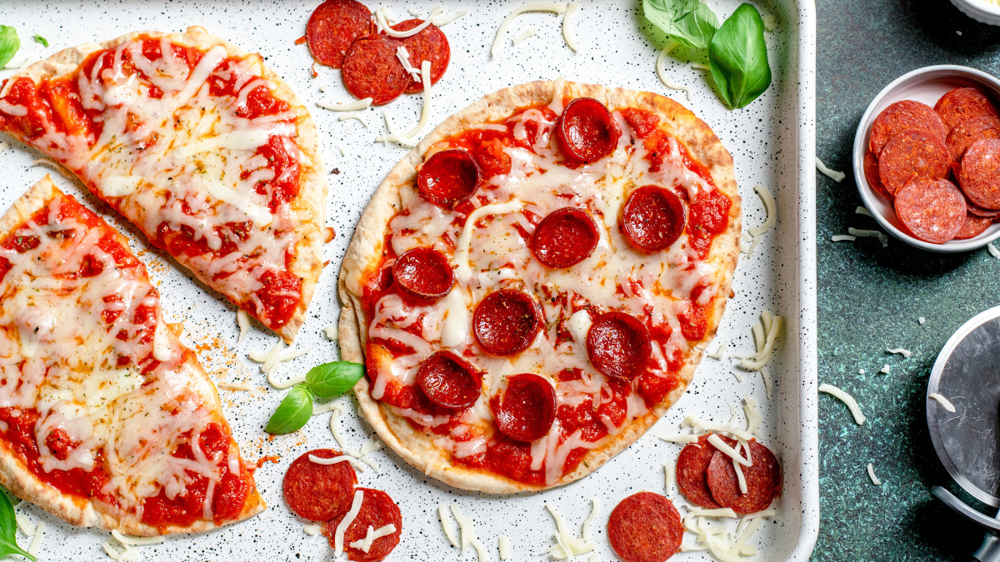

Homepage
Pitta Bread Pizza

Ready-to-eat, homemade pizza with pitta bread
Description:
Simple, quick and affordable pizza to satiate a craving or get a quick meal.
Can be paired with many ingredients, so you decide if you want a protein-filled meal, or just a tasty snack.
Ingredients:
- 1 Slice of Pitta Bread
- Tomato Sauce (with Garlic and Onion is also an option)
- Grated Cheese
- Any Toppings of your choice (Tuna and Salame are personal favourites)
Steps:
- Pre-heat the oven at 200ºC (392ºF).
- Spread tomate sauce over the pitta bread until the entire surface is evenly covered.
- Spread the grated cheese over the tomato sauce.
- Place your toppings of choice over the grated cheese.
- Put the assembled pizza in the oven and let it cook for 5-6 minutes, or until the bread is crispy.